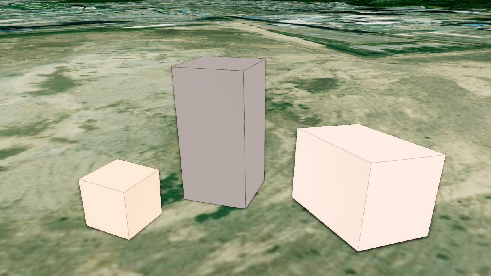

육면체 (Box)
목차

U3dBox는 너비·높이·깊이를 가진 육면체를 만드는 가장 기본적인 3D 도형입니다.
건물 부피, 설비 위치 표시, 영역 강조처럼 단순한 상자 형태가 필요한 곳에 사용합니다.
1. Box 생성하기
U3dBox 생성자로 객체를 만들고, U3dVectorLayer.addGeometry로 레이어에 등록하면 화면에 표시됩니다.
레이어를 만들고 도형을 등록·제거하는 방법은 3D Geometry 시작하기 - 도형 등록하고 제거하기에서 설명합니다.
크기는 width, height, depth 세 값으로 정하며 단위는 미터입니다.
지도 좌표축을 기준으로 width는 동서(x축), height는 남북(y축), depth는 수직(z축) 방향 크기입니다.
세 값을 지정하지 않으면 모두 10인 정육면체가 만들어집니다.
API
U3dBox(opt) : 육면체 객체를 생성하는 생성자
매개변수
opt(object) : 육면체 생성 옵션opt.name(string) : 객체 이름. 지정하지 않으면 자동으로 생성됩니다opt.width(number) : 동서(x축) 방향 크기(m). 기본값:10opt.height(number) : 남북(y축) 방향 크기(m). 기본값:10opt.depth(number) : 수직(z축) 방향 크기(m). 기본값:10opt.widthSegments(number) : 동서 방향 분할 수opt.heightSegments(number) : 남북 방향 분할 수opt.depthSegments(number) : 수직 방향 분할 수opt.color(ColorRepresentation) : 색상. 기본값:'#ff0000'opt.opacity(number) : 투명도(0~1). 기본값:0.7opt.type(string) : 재질 타입.'basic'은 단색,'topimage'는 윗면 이미지. 기본값:'basic'opt.topimageurl(string) : 윗면 이미지 URL.type이'topimage'일 때 사용합니다opt.outline(boolean) : 외곽선 표시 여부. 기본값:falseopt.lineColor(ColorRepresentation) : 외곽선 색상. 기본값:'#000000'opt.wireframe(boolean) : 와이어프레임 표시 여부. 기본값:falseopt.coordinates(Array<GeoPositionVector3>) : 위치 좌표 배열 (위경도, EPSG:4326)opt.properties(KeyValue) : 사용자 정의 속성정보
1. Box 생성 예제
너비 30m, 남북 30m, 높이 100m의 상자를 만들어 지면에 세우는 예제입니다.
건물 부피나 설비 점유 공간을 나타낼 때 쓰는 기본 형태입니다.
const app = new GeOnDT.U3dAPP({containername: 'map'});
const vectorLayer = new GeOnDT.vector.U3dVectorLayer({name: 'vector'});
const box = new GeOnDT.geom.U3dBox({
name: 'box_01',
width: 20, // 동서 방향 20m
height: 20, // 남북 방향 20m
depth: 40, // 수직 방향 40m
color: '#ff6b2d',
opacity: 1, // 불투명하게 표시
outline: true // 외곽선 함께 표시
});
vectorLayer.addGeometry(box); // 벡터 레이어에 등록
box.setPosition(126.9393, 37.5194, 20); // 위경도 좌표에 배치
2. 위치 지정하기
Box는 좌표 하나를 기준으로 그 지점에 놓입니다.
위치는 setPosition에 위경도를 넣어 지정하며, 레이어에 등록한 뒤 지정하면 됩니다.
지정한 위경도는 레이어가 그릴 때 월드 좌표로 변환되어 반영됩니다.
변환된 월드 좌표는 getVertex로 확인할 수 있습니다.
API
U3dBox.setPosition(x, y, z) : 위경도 좌표로 위치를 지정하는 함수
매개변수
x(number | Vector3) : 경도.Vector3를 넘기면 좌표 객체 하나로 지정합니다y(number) : 위도z(number) : 높이(m)
API
U3dBox.getPositions() : 지정된 위경도 좌표 배열을 반환하는 함수
반환값
return(Array<GeoPositionVector3>) : 위경도 좌표 배열 (EPSG:4326)
API
U3dBox.getVertex() : 변환된 월드 좌표 배열을 반환하는 함수
반환값
return(Array<WorldPositionVector3>) : 꼭짓점 좌표 배열 (월드 좌표, EPSG:3857)
API
U3dBox.setRotation(rotation) : 도형의 회전값을 지정하는 함수
매개변수
rotation(Euler) : 회전값 (라디안)
1. 위경도로 배치하는 예제
세 번째 인자는 고도(m)이며 상자의 중심이 기준입니다.
지형 높이를 자동으로 조회하거나 따라가지 않으므로, 바닥을 지면에 맞추려면 그 지점의 지형 고도에 수직 크기의 절반(depth / 2)을 더합니다.
지형 고도는 app.getHeightAtGeographicPoint({x, y})로 조회하며, 지형 로딩이 끝난 뒤에 호출해야 실제 값을 얻습니다.
vectorLayer.addGeometry(box);
// 지형 고도가 16m인 지점에 바닥을 맞춥니다.
box.setPosition(126.9393, 37.5194, 16 + box.depth / 2);
console.log(box.getPositions()); // [Vector3 {x: 126.9393, y: 37.5194, z: 36}]
2. 변환된 월드 좌표 확인 예제
다른 객체와 거리를 재거나 직접 계산할 때는 위경도가 아니라 변환된 월드 좌표를 씁니다.
console.log(box.getVertex()); // [Vector3 {x: ..., y: ..., z: ...}]
3. 회전 지정 예제
건물 축이 정북과 어긋난 경우처럼, 상자를 지도 방향에 맞춰 돌릴 때 사용합니다.
box.setRotation(new THREE.Euler(0, 0, Math.PI / 4)); // z축 기준 45도 회전
3. 크기 변경하기
생성 후에 크기를 바꾸려면 setParam에 바꿀 값만 담아 전달합니다.
전달한 값만 반영되고 나머지는 기존 값이 유지됩니다.
수직 방향 크기를 바꾸는 값은 height가 아니라 depth입니다.width는 동서(x축), height는 남북(y축) 방향 크기입니다.
세그먼트(widthSegments 등)는 각 면을 몇 개로 나눌지 정하는 값입니다.
API
U3dBox.setParam(param) : 여러 속성을 한 번에 갱신하는 함수
매개변수
param(object) : 변경할 속성 객체param.width(number) : 동서(x축) 방향 크기(m)param.height(number) : 남북(y축) 방향 크기(m)param.depth(number) : 수직(z축) 방향 크기(m)param.widthSegments(number) : 동서 방향 분할 수param.heightSegments(number) : 남북 방향 분할 수param.depthSegments(number) : 수직 방향 분할 수param.color(ColorRepresentation) : 색상param.opacity(number) : 투명도(0~1)param.outline(boolean) : 외곽선 표시 여부param.lineColor(ColorRepresentation) : 외곽선 색상param.wireframe(boolean) : 와이어프레임 표시 여부param.shadow(boolean) : 그림자 사용 여부
API
U3dBox.getParam() : 현재 속성을 반환하는 함수
반환값
return(object) : 크기·세그먼트·색상·투명도·외곽선 등 현재 속성 객체
1. 크기 변경 예제
층수가 바뀌어 높이만 조정하는 경우처럼, 필요한 축만 골라 바꿉니다.setParam은 전달한 값만 반영하므로 나머지 크기는 그대로 유지됩니다.
// 수직 방향 크기만 늘립니다.
box.setParam({depth: 80});
// 세 축을 한 번에 바꿉니다.
box.setParam({
width: 30, // 동서 30m
height: 30, // 남북 30m
depth: 100 // 수직 100m
});
2. 현재 크기 확인 예제
속성으로 직접 읽거나 getParam으로 한 번에 가져옵니다.getParam이 돌려준 객체는 다른 상자의 setParam에 그대로 넘겨 같은 크기로 맞출 수 있습니다.
console.log(box.width, box.height, box.depth); // 30 30 100
const param = box.getParam();
console.log(param.width, param.height, param.depth);
getParam으로 얻은 속성을 다른 도형에 그대로 넘기면 같은 모양으로 맞출 수 있습니다.
const other = new GeOnDT.geom.U3dBox();
vectorLayer.addGeometry(other);
other.setPosition(126.9403, 37.5194, 16 + box.depth / 2);
other.setParam(box.getParam()); // box와 같은 크기·색으로 맞춥니다.
4. 색상과 투명도 설정하기
색상은 setColor, 투명도는 setOpacity로 바꿉니다.
두 함수 모두 재질에 즉시 반영됩니다.
색상 값은 '#ff0000' 같은 hex 문자열, 'rgb(255,0,0)' 문자열, 0xff0000 숫자, THREE.Color 객체를 모두 받습니다.
setOpacity는 값이 1 미만이면 반투명 처리를 자동으로 켜고 1이면 끕니다.
현재 색상과 투명도는 getParam()으로 읽습니다.
API
U3dBox.setColor(color) : 색상을 설정하는 함수
매개변수
color(ColorRepresentation) : 색상 값
API
U3dBox.setOpacity(opacity) : 투명도를 설정하는 함수
매개변수
opacity(number) : 투명도(0~1).0이면 완전 투명,1이면 불투명
API
U3dBox.setTransparent(val) : 재질의 반투명 처리를 켜는 함수
매개변수
val(boolean) : 반투명 처리 사용 여부
1. 색상과 투명도 변경 예제
상태별로 색을 달리하거나, 뒤쪽 객체가 비쳐 보이도록 투명도를 낮출 때 사용합니다.
색상 값은 hex 문자열과 숫자를 모두 받습니다.
box.setColor('#00b3ff'); // hex 문자열
box.setColor(0x00b3ff); // 숫자
box.setColor('rgb(0,179,255)');
box.setOpacity(0.4); // 반투명
box.setOpacity(1); // 불투명
2. 현재 색상과 투명도 확인 예제
getParam이 돌려주는 색상은 넘긴 값 그대로이므로, 비교하거나 계산하려면 THREE.Color로 감싸서 씁니다.
const {color, opacity} = box.getParam();
console.log(opacity); // 1
// Color 객체로 다루려면 THREE.Color로 감싸서 사용합니다.
const current = new THREE.Color(color);
console.log(current.getHexString()); // '00b3ff'
3. 와이어프레임 표시 예제
면을 채우지 않고 뼈대만 표시합니다.
box.setParam({wireframe: true});
5. 외곽선 표시하기
모서리를 뚜렷하게 보이려면 외곽선을 켭니다.
생성 옵션 outline으로 초기 상태를 정하고, 생성 후에는 setParam({outline: true})으로 켜거나 끕니다.
외곽선을 켠 뒤에는 setLineColor로 색상을 바꿀 수 있습니다.
API
U3dBox.setLineColor(lineColor) : 외곽선 색상을 설정하는 함수
매개변수
lineColor(ColorRepresentation) : 외곽선 색상
API
U3dBox.getLineColor() : 외곽선 색상을 반환하는 함수
반환값
return(ColorRepresentation) : 외곽선 색상
1. 외곽선 제어 예제
상자를 반투명하게 두고 외곽선을 진하게 주면 경계가 또렷해집니다.
여러 상자가 붙어 있을 때 구분하기 좋습니다.
box.setParam({outline: true}); // 외곽선 표시
box.setLineColor('#ffffff'); // 외곽선 색상 변경
box.setParam({outline: false}); // 외곽선 제거
생성할 때 함께 지정할 수도 있습니다.
const box = new GeOnDT.geom.U3dBox({
width: 20,
outline: true,
lineColor: '#ffffff'
});
6. 이미지 입히기
Box에 이미지를 입히는 방법은 세 가지입니다.
목적에 맞는 것을 고릅니다.
setImage: 여섯 면 전체에 같은 이미지를 입힙니다. 이미지의 가로세로 비율에 따라 방향이 자동 보정됩니다setTexture: 단색(basic) 상자에 이미지를 입힙니다. 방향 보정 없이 원본 그대로 적용됩니다type: 'topimage': 생성할 때 윗면에만 이미지를 넣고 나머지 다섯 면은 단색으로 둡니다
API
U3dBox.setImage(url) : 모든 면에 이미지를 입히는 함수
매개변수
url(string) : 이미지 URL
API
U3dBox.getImage() : 적용된 이미지 URL을 반환하는 함수
반환값
return(string | undefined) : 이미지 URL. 적용된 이미지가 없으면undefined
API
U3dBox.setTexture(textureUrl) : 단색 상자에 텍스쳐 이미지를 입히는 함수
매개변수
textureUrl(string) : 텍스쳐 이미지 URL
1. 모든 면에 이미지 입히기 예제
벽면 재질이나 안내 이미지를 상자 전체에 두르는 경우입니다.
box.setImage('image/sample/wall.png');
console.log(box.getImage()); // 'image/sample/wall.png'
2. 윗면에만 이미지 넣기 예제
윗면 이미지는 생성할 때 지정합니다.
const box = new GeOnDT.geom.U3dBox({
name: 'box_02',
width: 30,
height: 10,
depth: 30,
type: 'topimage', // 윗면 이미지 재질
topimageurl: 'image/sample/roof.png', // 윗면에 넣을 이미지
color: '#cccccc' // 나머지 다섯 면의 색상
});
vectorLayer.addGeometry(box);
7. 속성정보와 해제
도형에는 id, 이름, 업무 데이터 같은 부가 정보를 key-value 형태로 담아 둘 수 있습니다.
클릭한 객체의 업무 정보를 표시할 때 주로 사용합니다.
새 속성을 넣을 때는 addProperties, 기존 값을 바꿀 때는 changeProperties, 전체를 통째로 교체할 때는 setProperties를 사용합니다.
더 이상 쓰지 않는 육면체는 dispose로 정리합니다.
API
U3dBox.getProperties() : 사용자 정의 속성정보를 반환하는 함수
반환값
return(KeyValue) : 사용자 정의 속성정보
API
U3dBox.setProperties(input) : 사용자 정의 속성정보 전체를 설정하는 함수
매개변수
input(KeyValue | string) : 속성 객체 또는 JSON 문자열
API
U3dBox.addProperties(key, value) : 속성정보를 하나 추가하는 함수
매개변수
key(string) : 속성 식별키value(*) : 속성 값
API
U3dBox.changeProperties(key, value) : 기존 속성정보의 값을 변경하는 함수
매개변수
key(string) : 변경할 속성 식별키value(*) : 속성 값
API
U3dBox.removeProperties(key) : 속성정보를 제거하는 함수
매개변수
key(string) : 제거할 속성 식별키
API
U3dBox.setShadow(enabled) : 그림자 사용 여부를 설정하는 함수
매개변수
enabled(boolean) : 그림자 사용 여부. 기본값:true
API
U3dBox.isShadow() : 그림자 사용 여부를 반환하는 함수
반환값
return(boolean) : 그림자 사용 여부
API
U3dBox.dispose() : 육면체와 관련 리소스를 해제하는 함수
1. 속성정보 다루기 예제
box.addProperties('용도', '변전설비');
box.addProperties('관리번호', 'A-1024');
box.changeProperties('용도', '배전설비'); // 기존 값 변경
box.removeProperties('관리번호'); // 속성 제거
console.log(box.getProperties()); // {용도: '배전설비'}
속성 전체를 한 번에 교체할 수도 있습니다.
box.setProperties({
용도: '변전설비',
관리번호: 'A-1024',
설치일: '2026-03-01'
});
2. 그림자 사용 예제
일조나 그림자 영향을 함께 보여줘야 할 때 켭니다.
켜면 그림자를 드리우는 동시에 다른 객체의 그림자도 받습니다.
box.setShadow(true); // 그림자를 드리우고 받도록 설정
console.log(box.isShadow()); // true
3. 해제 예제
레이어에서 먼저 제거한 뒤 해제합니다.
vectorLayer.removeGeometry(box);
box.dispose();